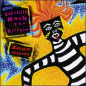

Gabrielle Roth and the Mirrors • Raven • Jun 1997
Mirrors musical director Gabrielle Roth takes her Five Rhythms (see Roth bio) onto the pavement and out into the steely nights of the city. Acoustic drums and percussion still set the trance-dance beats, but touches of electricity (bass,
synth, drum programs) have infiltrated the hypnotic cadences. The result is an album more for pure dance (fun) than for moving through emotional catharsis. Indeed, Roth's usual slogan, "Sweat your prayers," is slightly altered to "Dance your
heart out and your ass off -- into the zone." The title cut is a slinky, almost spooky, version of her typical belly-dance "flowing" movement. Listening to this cut, one can easily see how the flowing movement will catalyze the emotion of
fear -- very shadowy. "Downtown" includes the cool, muted jazz trumpet of Chris Botti, the funky bass of Sergio Bandao, and Roth's sultry voice coaxing, "Let's dance." The lively "Buffalo Dream" gallops in a 6/8 chaos cadence, but it has a
Native American feel to it. "Avenue A" is a breathless run amid the streets and wires of the city, while "Jamu" returns to a slinkier blues chaos rhythm with Jai Uttal on guitars and synth and Mindy Jostyn on harmonica and vocals. The album
ends with the smoldering stillness of "Drifting"; Mark Shulman is featured on the wailing guitar. If you've seen and danced to Roth's Wave video, you'd know how much Roth is a creature of the Village; this album celebrates the mysteries of
the city while still staking claim to the soul. - Carol Wright, All Music Guide